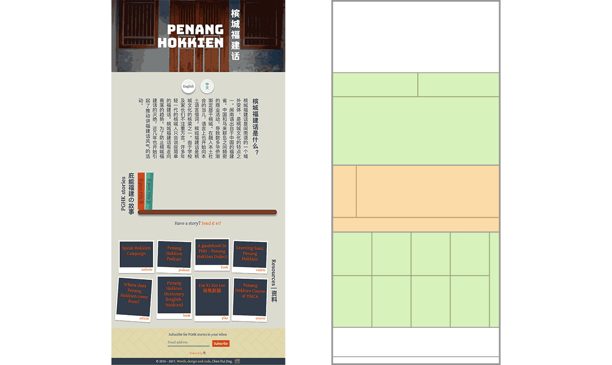

CSS grid + writing-mode = 🎉
By Chen Hui Jing / @hj_chen
What is CSS grid?
Grid Layout is a new layout model for CSS that has powerful abilities to control the sizing and positioning of boxes and their contents.
Unlike Flexible Box Layout, which is single-axis–oriented, Grid Layout is optimized for 2-dimensional layouts.
Source: CSS Grid Layout Module Level 1When is CSS grid supported?
Gecko: intent to ship in Firefox 52 (7 March, 2017)
Blink: intent to ship in Chrome 57 (14 March, 2017)
Webkit: ships in Safari 10.1 (release date March/April-ish)
Edge: on the backlog with High priority 🤷
Enable CSS Grid Layout
-

Chrome
Enable the flag called Enable experimental Web Platform features going to:
chrome://flags/#enable-experimental-web-platform-features -

Firefox
Enable the flag called layout.css.grid.enabled going to:
about:config -

-

Opera
Enable the flag called Enable experimental Web Platform features going to:
opera://flags/#enable-experimental-web-platform-features -

WebKit
In Safari Technology Preview and WebKit Nightly Builds you can enable the experimental feature called CSS Grid using the menu: Develop > Expermiental Features > CSS Grid
-

Epiphany
Set the environment variable
WEBKITGTK_EXPERIMENTAL_FEATURES:
$ export WEBKITGTK_EXPERIMENTAL_FEATURES="CSS_GRID_LAYOUT=1"


So I built something the other day...

What is CSS writing-mode?

CSS Writing Modes Level 3 defines CSS features to support for various international writing modes, such as left-to-right (e.g. Latin or Indic), right-to-left (e.g. Hebrew or Arabic), bidirectional (e.g. mixed Latin and Arabic) and vertical (e.g. Asian scripts).
You can make your browser literally turn on its side from left-to-right.
🙃Or make it read from right-to-left.
🙂Vertical text is fun!
Different but same
Centring things is no fun
See the Pen Vertical layout behaviour by Chen Hui Jing (@huijing) on CodePen.
Today we learnt
- Centre along vertical axis using:
margin-top: auto; margin-bottom: auto; - Sideways equivalent of vertical centring is 💩
- Flexbox no like writing-mode on Firefox (for now)
- Browsers are very inconsistent at the moment 😫
Can I Use? Can.
Browser support: CSS Writing Mode
CSS Logical Properties Level 1
Introduces logical properties and values that provide the author with the ability to control layout through logical, rather than physical, direction and dimension mappings.
Source: CSSWGstart and end vs. left and right
Can I Use? Cannot.
Browser support: CSS Logical Properties
Disclaimer: If you're reading this from the future, maybe can.But, we have CSS Grid
Disclaimer: you cannot learn CSS grid overnight.
It'd be nice if you read the specification 🤓
| Grid container | Grid item |
|---|---|
|
|
Switching to Grid
Simple grid
.container {
display: grid;
grid-column-gap: 1em;
grid-row-gap: 1em;
}
.top-left {
grid-row: 1 / 2;
grid-column: 1 / 2;
align-self: center;
justify-self: end;
}
.top-right {
grid-row: 1 / 2;
grid-column: 2 / 3;
align-self: center;
justify-self: start;
}
.bottom {
grid-column: 1 / 3;
grid-row: 2 / 3;
justify-self: center;
}Another simple grid
fr → represents a fraction of the free space in the grid container.

.container {
display: grid;
grid-template-columns: 3.6em 1fr;
grid-column-gap: 0.5em;
grid-row-gap: 1em;
}
.left {
grid-row: 1 / 2;
align-self: center;
}
.top-right {
grid-row: 1 / 2;
grid-column: 2 / 3;
align-self: center;
justify-self: start;
}
.bottom {
grid-column: 1 / 3;
grid-row: 2 / 3;
justify-self: center;
}Moderate grid
repeat() → represents a repeated fragment of the track list

.outer-container {
display: grid;
grid-template-columns: 1fr 2em;
}
.inner-container {
grid-column: 1 / 2;
grid-row: 1 / 2;
display: grid;
grid-column-gap: 0.5em;
grid-row-gap: 1em;
@media all and (max-width: 719px) {
grid-template-columns: repeat(2, 1fr);
}
@media all and (min-width: 720px) and (max-width: 1279px) {
grid-template-columns: repeat(3, 1fr);
}
@media all and (min-width: 1280px) {
grid-template-columns: repeat(4, 1fr);
}
}
.right {
align-self: center;
grid-column: 2 / 3;
grid-row: 1 / 2;
}Further reading
- CSS Grid Layout Module Level 1
- Grid by Example by Rachel Andrew
- CSS Grid Layout Examples by Igalia
- A Complete Guide to Grid by Chris House